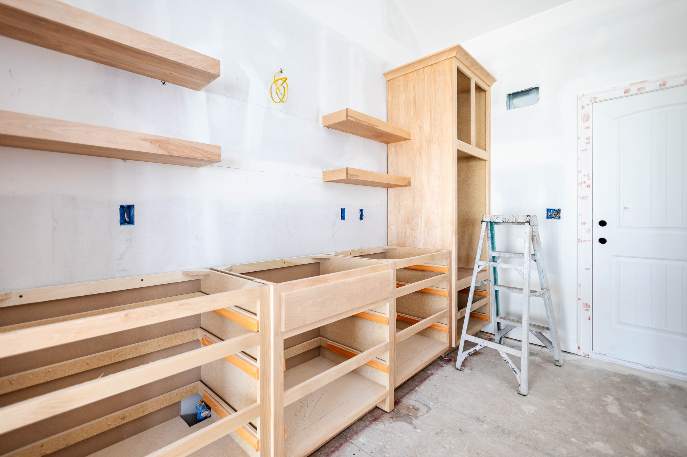

Achat
Achat d’une propriété
Vous avez déjà été propriétaire, ou vous changez de maison. Le financement doit tenir compte de la vente, du calendrier et des deux dates de notaire.
En savoir plusLe courtage est exercé par l’entremise d’Intelligence Hypothécaire, du réseau Groupe Financier Signature.
Achat, renouvellement, refinancement et analyse de capacité d’emprunt. Je compare les offres de plusieurs prêteurs. Je n’accorde aucun financement.
Parlons de votre projet
Le premier appel sert à comprendre votre projet. Une vingtaine de minutes, sans document à préparer.
Je suis courtière hypothécaire, et ma façon de travailler repose sur trois choses : l’écoute, la stratégie et la transparence.
Seulement une approche transparente, des stratégies réfléchies et un accompagnement qui vous permet d’avancer avec confiance.
Lire le parcoursChaque dossier mérite une approche personnalisée.
Vous avez déjà été propriétaire, ou vous changez de maison. Le financement doit tenir compte de la vente, du calendrier et des deux dates de notaire.
En savoir plusVotre terme arrive à échéance. Votre institution vous a envoyé une offre. On la compare avec le marché avant que vous signiez par habitude.
En savoir plus
Utiliser la valeur accumulée dans votre propriété pour des travaux, pour regrouper des dettes ou pour libérer un budget mensuel.
En savoir plusRevenus, mise de fonds, dettes, historique de crédit. On établit ce qui est réellement finançable avant de parler à un prêteur.
En savoir plusMa philosophie est simple : je préfère vous dire ce que vous avez besoin d’entendre plutôt que ce que vous aimeriez entendre.
Parlons de votre projetJe ne parle pas de taux au premier appel. Je regarde d’abord vos revenus, votre mise de fonds, vos dettes et votre échéance. Un chiffre sans contexte ne vous sert à rien.
Si votre dossier ne tient pas maintenant, on vous le dit, et on vous explique ce qui devrait changer pour qu’il tienne. Vous perdez une conversation au lieu de plusieurs mois.
Du premier appel jusqu’à la signature chez le notaire, puis au renouvellement. Votre dossier reste suivi par la même personne entre les étapes.
Rien à préparer pour le premier appel. Il sert à comprendre votre projet.
Ce que vous voulez acheter, votre échéance, ce qui vous inquiète. Une vingtaine de minutes, sans document à préparer.
Revenus, mise de fonds, dettes, historique de crédit. On établit ce qui est réellement finançable avant de parler à un prêteur.
Votre dossier est présenté aux prêteurs qui conviennent à votre situation. Vous voyez les scénarios et vous choisissez.
Suivre le dossier jusqu’à la signature, puis au renouvellement.
Dans la très grande majorité des dossiers résidentiels, c’est le prêteur qui verse ma rétribution, pas vous. S’il devait y avoir des frais à votre charge dans une situation particulière, ils vous sont divulgués par écrit avant que le travail commence. Vous ne recevez jamais de facture surprise.
Non. Je suis courtière hypothécaire, pas un prêteur. Mon travail est de monter votre dossier et de le présenter aux prêteurs qui conviennent à votre situation, puis de vous expliquer les scénarios. La décision d’accorder le prêt appartient toujours au prêteur.
Non, et personne ne devrait le faire de façon sérieuse. Un taux dépend de votre dossier, du type de propriété, de la mise de fonds et du moment. Je vous donne des chiffres une fois que j’ai regardé votre situation, et ils viennent avec les conditions qui les accompagnent.
Oui, et c’est souvent le meilleur moment pour appeler. Certains prêteurs lisent un historique imparfait autrement que votre institution. On vous dira franchement si un dossier ne tient pas, plutôt que de vous faire perdre des mois.
Oui. J’accompagne les dossiers résidentiels partout au Québec. La rencontre peut se faire en personne, par téléphone ou en visioconférence.